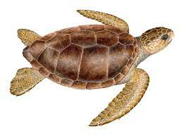

(1)Green Turtle

The green turtle (Chelonia mydas) is a species of marine turtle and is one of the most commonly found turtles in Sri Lanka. The green turtle is named for the color of its body fat, which is green due to the turtle's herbivorous diet of seagrasses and algae. Green turtles can grow up to 1.5 meters (5 feet) in length and can weigh up to 200 kilograms (440 pounds). They are known for their streamlined bodies, which are designed for efficient swimming. Green turtles can be found in all oceans around the world, and they are known for their impressive migrations between nesting and feeding grounds. In Sri Lanka green turtles are commonly found nesting along the beaches of the Southern and Eastern coasts during the months of June to September. These nesting sites are protected by conservation efforts to ensure the survival of this species. Green turtles are considered endangered globally due to habitat loss, hunting, and accidental capture in fishing nets. Conservation efforts are ongoing to protect this species and its habitats in Sri Lanka and around the world.Green turtles nest all year round in Sri Lanka, with the highest abundance reported in Kosgoda.
(2)Hawksbill Turtle

The hawksbill turtle (Eretmochelys imbricata) is known for its strikingly beautiful shell with overlapping scutes. This critically endangered species has a pointed beak and primarily feeds on sponges, mollusks, and other invertebrates. Sri Lanka serves as an important nesting site for hawksbill turtles. Nesting sites of Sri Lanka includes Kataduwa, Bentota, Udappuwa, Kosgoda, Karaduwa, Talaimannar, Jaffna, Galkissa, Talawila, Palatupana, Amadhauwa. These turtles are found mainly in the tropical regions of the Atlantic, Pacific, Indian Oceans & Mediterranean Sea.
(3)Loggerhead Turtle

Loggerhead turtles are named for their large heads that support powerful jaw muscles, allowing them to crush hard-shelled prey like clams and sea urchins. They are less likely to be hunted for their meat or shell compared to other sea turtles. Bycatch, the accidental capture of marine animals in fishing gear, is a serious problem for loggerhead turtles because they frequently come in contact with fisheries.Loggerheads are the most common turtle in the Mediterranean, nesting on beaches from Greece and Turkey to Israel and Libya. Many of their nesting beaches are under threat from tourism development. Sea turtles are the living representatives of a group of reptiles that has existed on Earth and travelled our seas for the last 100 million years. They are a fundamental link in marine ecosystems and help maintain the health of coral reefs and sea grass beds.
| Category | Species | Specific Locations | Images |
|---|---|---|---|
| Sea Turtles | Loggerhead Turtle | Coastal regions of Sri Lanka, especially Rekawa and Pigeon Island |  |
| Green Turtle | Tropical and subtropical waters worldwide |  |
|
| Hawksbill Turtle | Coastal regions of Sri Lanka, especially Kosgoda, Hikkaduwa, and Trincomalee |  |
|
| Freshwater Turtles | Indian Flapshell Turtle | Rivers and wetlands throughout Sri Lanka |  |
| Sri Lankan Black Turtle | Rivers and wetlands in northern Sri Lanka |  |
|
| Indian Roofed Turtle | Rivers and wetlands throughout Sri Lanka |  |
|
| Sri Lankan Painted Terrapin | Rivers and wetlands in southern Sri Lanka |  |
|
| Box Turtles | Sri Lankan Box Turtle | Forested areas and agricultural lands in Sri Lanka |  |
| Softshell Turtles | Sri Lankan Softshell Turtle | Rivers and wetlands throughout Sri Lanka |  |